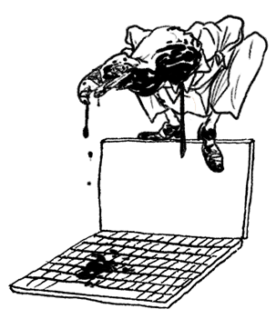

Sobre como o pl espião quer comer você
PL Espião é o apelido dado ao Projeto de Lei 215/2015 , que hoje, dezembro/15, está pronto para ser votado na Câmara dos Deputados do Brasil.
Caso aprovado:
1) políticos eleitos poderão remover conteúdo sobre si mesmo da internet sem decisão judicial;
2) governo e polícia acessariam livremente seus dados pessoais, inclusive email e chats.
poisé, gente..
Sobre como o pl espião quer comer você
Um dos maiores ataques às liberdades individuais desde nossa última ditadura, passando sem debate público.
Fizemos este site para entender da onde veio esse absurdo e onde ele pode parar, para o bem ou para o mal.
Comece pelo vídeo.
Direito ao Esquecimento
Hoje, a Europa está debatendo o direito ao esquecimento onde um cidadão pode remover dos mecanismos de busca conteúdo que lhe seja prejudicial, como vídeos de sexo ou outros equívocos..
Mas apenas de civis. Políticos e pessoas públicas estão fora dessa regra.
Nosso PL Espião, porém, propõe que autoridades competentes, seja lá o que isso for, possam remover da rede conteúdo que considerem prejudicial à sua honra.
Direito ao Esquecimento
Ou seja, Fernando Collor, Eduardo Cunha, Geraldo Alckmin, Lula e todos os seus colegas poderiam excluir o histórico de cobertura prejudicial à sua honra.
Sem decisão judicial.
Estariam, assim, reescrevendo a história.
Uma grande fogueira digital de livros.
Direito ao Esquecimento
O absurdo é tão grande que hoje parte dos ativistas se perguntam se o apelido cunhado por eles (nós) deveria ser outro.
PL do Esquecimento. Um nome mais forte do que PL Espião, talvez.
Acesso a informações
Hoje, o Marco Civil da Internet determina que os provedores armazenem as informações sobre a navegação de cada usuário pela rede, que páginas acessou e que ferramentas utilizou
Essas informações são sigilosas e só podem ser abertas por pedido judicial, tal qual sigilo telefônico ou bancário.
Acesso a informações
Porém, usando segurança pública como pretexto, o PL Espião abre a porta para que políticos eleitos possam perseguir seus desafetos.
Chega ao limite de oferecer aos investigadores da polícia o direita de acessar suas informações sem a necessidade de queixa.
Na prática, essa medida transformaria autoridades públicas em advogados privados de políticos.
E o medo?
Tudo bem, pode criticar quem você quiser..
... mas deixe aqui seu nome, cpf e endereço, por favor.
E o medo?
A aprovação de uma lei dessas criaria um clima de terror entre os usuários da rede, principalmente aqueles que a utilizam como ferramenta política.
A dualidade entre segurança e liberdade é uma questão falsa, sempre levantada por aqueles que querem aumentar seu controle sobre a sociedade.
Origens da peste
De autoria do deputado Hildo Rocha (PMDB-MA), o PL 215/2015 nasceu propondo punições maiores aos crimes realizados na rede.
Porém, outros Projetos de Lei foram absorvido em seu texto base:
Expedito Neto
O PL 1547/2015, do deputado Expedito Netto (SD/RO), permite o acesso irrestrito às informações pessoais sem decisão judicial
Expedito Control Freak, aparelhador da burocracia da vigilância.
Soraya Santos
O PL 1589/2015, da deputada Soraya Santos (PMDB/RJ), garante a exclusão de conteúdo por políticos eleitos.
Que feio, Soraya, todo mundo vendo o que você está fazendo...
Eduardo Cunha
Antigo inimigo do Marco Civil da Internet e Esculhambador da República, Cunha já havia proposto lei semelhante.
Agora, determina a tramitação acelerada do PL Espião.
Eduardo Cunha
O PL Espião altera o Marco Civil, o Código Penal, o Código de Processo Penal e a Lei dos Crimes Hediondos
Cunha ignorou solicitações para debater o projeto na Comissão de Segurança Pública e Combate ao Crime Organizado e na Comissão de Ciência, Tecnologia, Comunicação e Informática;
Determinou que ele fosse debatido apenas na Comissão de Constituição e Justiça (CCJ), última etapa antes de um pl seguir para votação.
Eduardo Cunha
Onde foi aprovado em outubro/15.
E, agora, Cunha coloca o projeto em votação.
E o Marco Civil com isso?
Também chamado de PL 2126/2011, o Marco Civil é um marco regulatório para a internet, lei que estabelece direitos e deveres dos usuários, prestadores de serviço, provedores e governos, determinando os limites destes atores.
Seu processo de construção coletiva é uma das jóias da democracia brasileira, sem exageros.
E o Marco Civil com isso?
O texto atual é resultado de uma série extensa de consultas públicas, presenciais e digitais, que receberam milhares de contribuições de cidadãos de todo o Brasil, entre 2009 e 2014, ano em que Dilma Roussef, finalmente, sancionou a lei.
Ele é uma referência global na garantia das liberdades individuais na rede.
Estabelece que os dados pessoais são do usuário e não das empresas que os gerenciam.
E o Marco Civil com isso?
Além disso, ele também garante
retirada de conteúdo apenas com decisão judicial
responsabilidade do conteúdo é do autor, não do provedor
neutralidade da rede
você precisa entender o que é neutralidade da rede, também
E o Marco Civil com isso?
O Marco Civil consolida em uma Lei os princípios que fizeram a Internet livre, aberta, criativa e democrática.
E ele é necessário. A internet vive em guerra,
você não sabia?
Liberdade x segurança controle
Se os donos do mundo houvessem percebido o potencial da internet,
teriam matado no berço.
Liberdade x segurança controle
Felizmente, crescemos sozinhos
(por algum tempo)
E criamos ferramentas digitais de liberdade
Software livre
Criptografia
Acesso à informação
Transparência radical
Liberdade x segurança controle
Na última década, porém, ocorreram muitos ataques pelo controle da internet
CISPA
Lei Azeredo
SOPA
Digital Millennium Copyright Act
PIPA
CPI dos Crimes Cibernéticos
Liberdade x segurança controle
Tanto Marco Civil quanto PL Espião são capítulos dessa disputa, nenhum deles encerra a discussão
No longo prazo, temos do nosso lado
- a flexibilidade do open source
- a altivez radical da ética hacker
- a certeza de que não se regula uma rede distribuída por decreto
Liberdade x segurança controle
Eles tem
- acesso a 99,99% dos dados existentes
- bilhões de dólares
- metralhadoras
Liberdade x segurança controle
.. não vai ser fácil
- Realização
- trocasvale.etc.br
- Apoio
- Access
- Núcleo Digital
- Ibidem
- Filmes para Bailar
- Edição e texto
- Breno Castro Alves
- Ilustração
- Rafael Coutinho
- Design
- Marco Veiga
- Programação
- Breno Castro Alves
- Lucas Pirola
- Davi Lima
- Vídeo
- Rafael Frazão
- Roteiro do vídeo
- Paulo Rená
- Katerina Elias-Trostmann
- Ian Sofredini